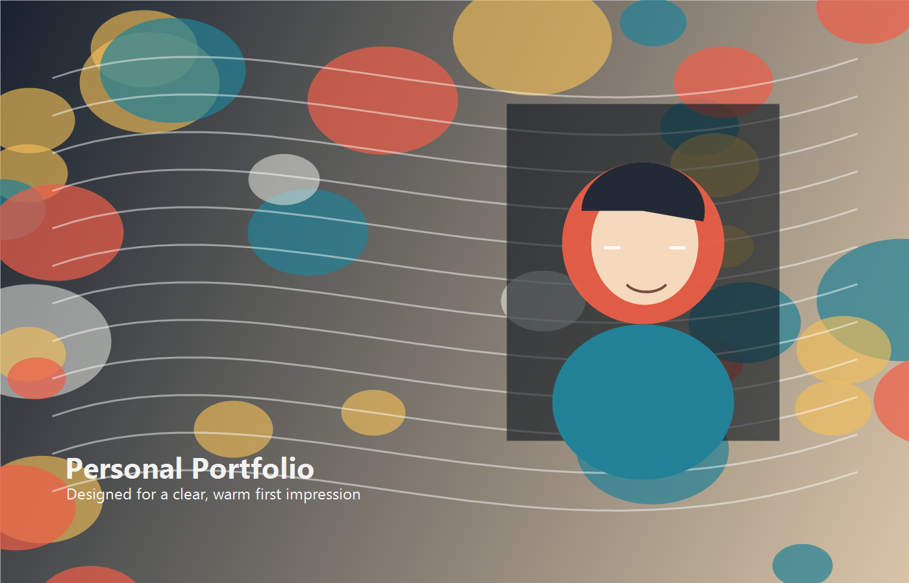

01 / Web App
习惯追踪仪表盘
一个帮助个人记录习惯、观察趋势并复盘生活节奏的小工具，强调低负担输入和清晰反馈。
Independent creator / Product thinker
你好，我是 Alex。这里可以放你的个人介绍：你正在做什么、擅长什么， 以及你希望别人第一眼记住你的那句话。

About
我喜欢连接人、产品和故事。过去的项目横跨内容创作、工具设计和数字体验， 也一直在寻找更自然的方式，让技术服务于真实的工作和生活。
Selected Work
01 / Web App
一个帮助个人记录习惯、观察趋势并复盘生活节奏的小工具，强调低负担输入和清晰反馈。
02 / Writing
一组关于学习、创造力和个人系统的文章，把松散经验整理成可复用的方法。
03 / Research
探索如何把 AI 嵌入日常工作，从提示词、自动化到协作界面，提升思考和产出速度。
Contact